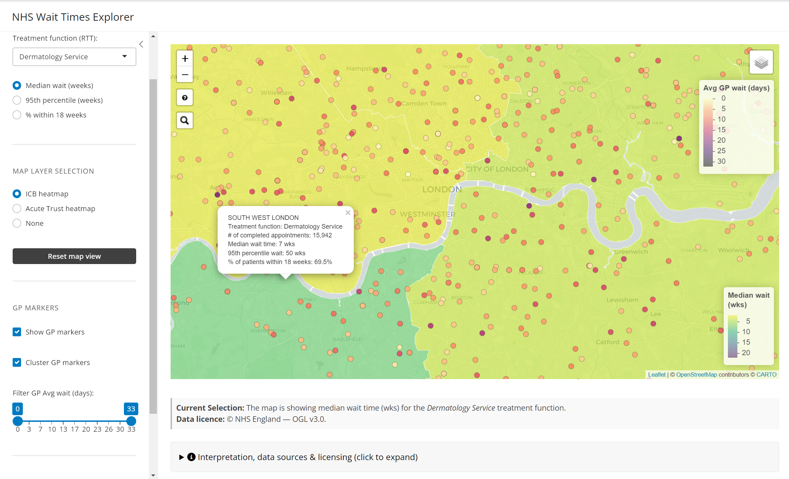
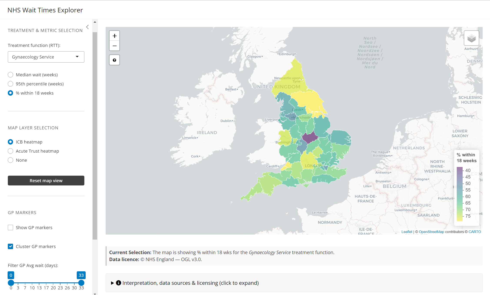
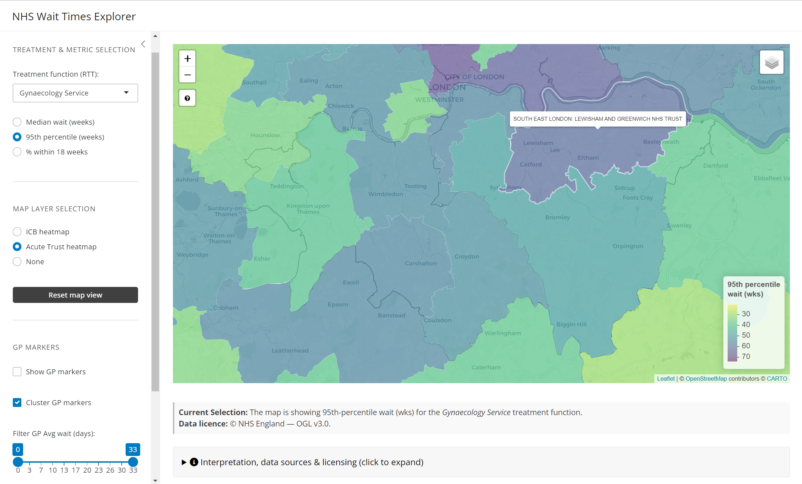
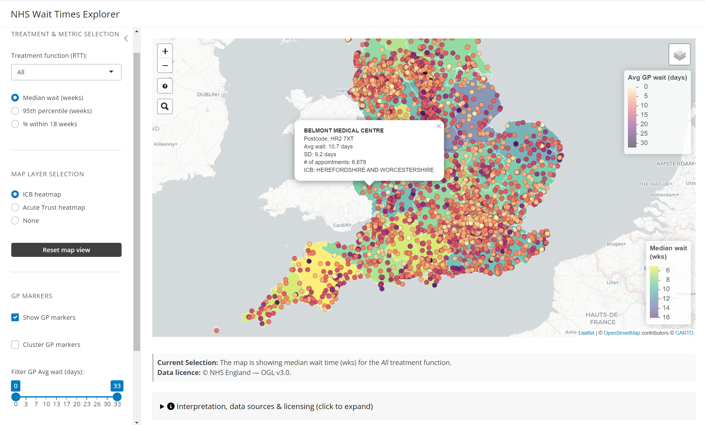

Live app: https://n-garner.shinyapps.io/nhs-wait-times-explorer/
Code & data pipeline: https://github.com/N-Garner/NHS-wait-times-explorer
Doc site (this page): https://n-garner.github.io/NHS-wait-times-explorer/
This project maps routine GP appointment waits (days) and elective hospital Referral To Treatment (RTT) waits (weeks) by Integrated Care Board (ICB) and acute Trust in England. It helps patients, clinicians, and commissioners explore where access to care is faster or slower.
Living with and managing chronic conditions means that continuity and timeliness of care really matter. Getting a GP appointment and/or a specialist referral quickly can be the difference between a minor flare‑up and an emergency hospital admission. Picking a GP with low waiting times within the catchment area of an Integrated Care Board and acute Trust with shorter referral to treatment (RTT) wait times can substantially speed up access to diagnostics and treatment.
While all of the data used in this project is available publicly, garnering this information as an individual is time consuming and requires the ability to handle and interpret large health-related data sets. I built an easy-to-use shiny app that enables anyone to quickly understand their likely referral to treatment times across England for the main healthcare specialty areas, and to find a general practice (GP) within each ICB with low wait times for general consults.
This tool:
Full code lives in scripts/. High-level steps:
output_data/:
appointment_data.rds, nhs_wait_icb.rds,
nhs_wait_trusts.rds.These are aggregated stats, not individual waits. They indicate system performance, not guaranteed personal wait times.
One dataset cannot be scripted (hosting/licence):
1. Open: https://app.box.com/s/qh8gzpzeo1firv1ezfxx2e6c4tgtrudl/folder/170910088405
2. Download the ZIP containing “2022Elective_FPTP_Full”
3. Extract into: C:\Users\Nick\Documents\GitHub\NHS-wait-times-explorer\site_src\output_data\2022Elective_FPTP_FullThe app stops with a helpful error if these files are missing.
git clone https://github.com/N-Garner/NHS-wait-times-explorer
cd nhs-wait-times-explorer
renv::restore()source("scripts/load_and_transform.R")(Or drop prebuilt RDS files into output_data/.)
shiny::runApp("app")rsconnect::deployApp("app")app/ folder; ensure output_data/ is available
or regenerated.LICENSE).LICENSE-OGL-DATA.md).Median RTT wait times by ICB for dermatology services around London, overlayed with individual GP wait times

Percent of patients seen within 18 weeks for gynaecology services across England by ICB region

95th percentile RTT wait times (95% of patients seen within x weeks) by acute trust for gynaecology services across south London.

A view of average GP wait times across England when GP markers are not clustered, with median wait times for all treatment specialties averaged by ICB in the background.

Spotted an error? Feature idea?